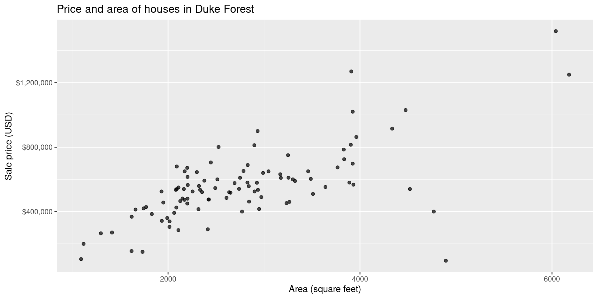
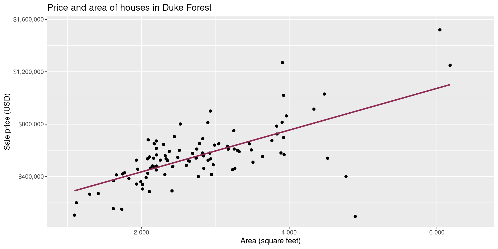
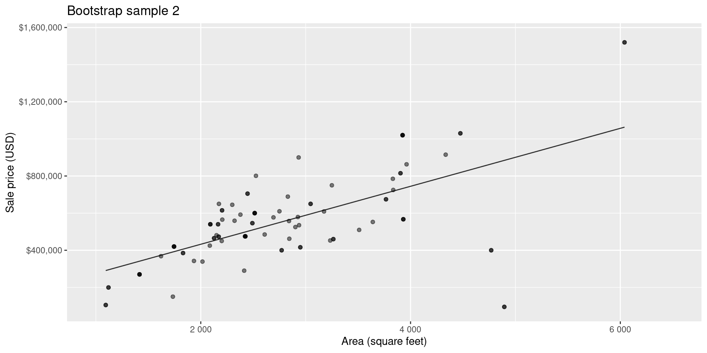
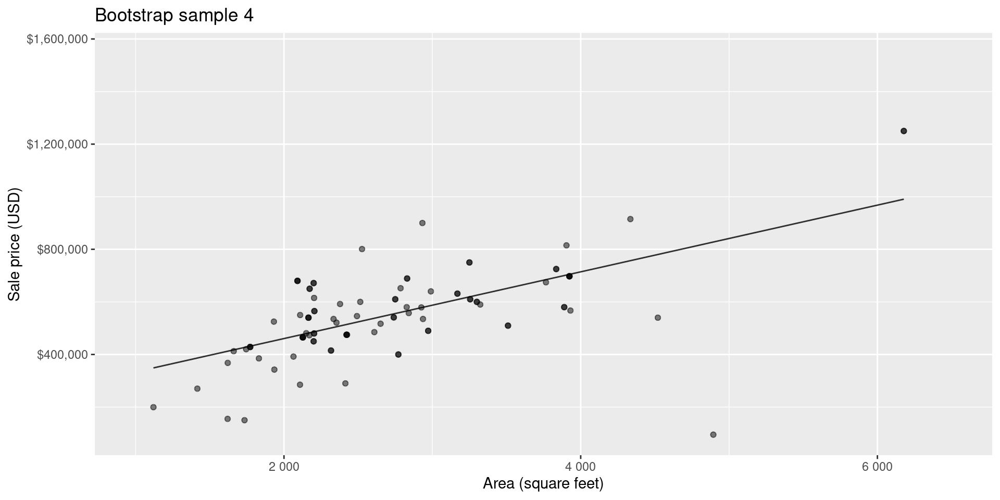
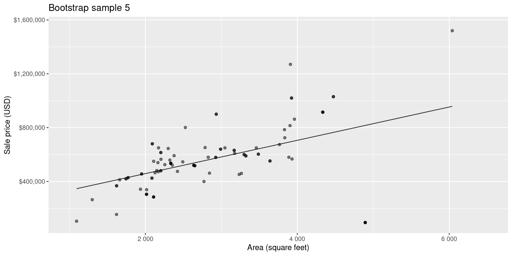
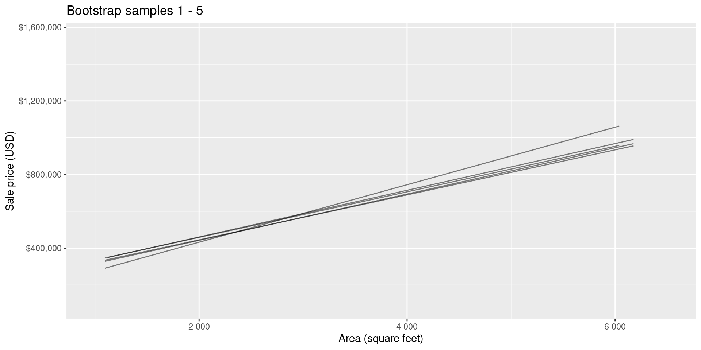
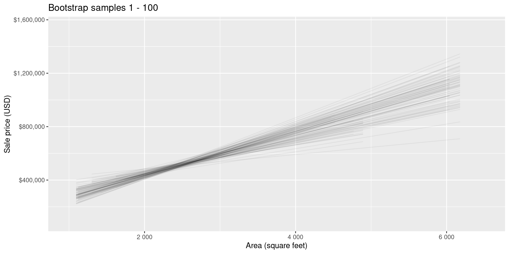

Quantifying uncertainty with bootstrap intervals
Lecture 21
Dr. Mine Çetinkaya-Rundel
Duke University
STA 199 - Fall 2024
November 14, 2024
Warm-up
While you wait…
Go to your
aeproject in RStudio.Make sure all of your changes up to this point are committed and pushed, i.e., there’s nothing left in your Git pane.
Click Pull to get today’s application exercise file: ae-18-duke-forest-bootstrap.qmd.
Wait till the you’re prompted to work on the application exercise during class before editing the file.
Announcements
Project timeline and progress:
-
Due this Friday, Nov 15 - Milestone 3
- Bare minimum: Address and close issues
- Ideal: Start working on your project write-up in
index.qmd
-
Before Monday, Nov 25 - Between Milestones 3 and 4
- Bare minimum: Make substantial progress on your project write-up: Finish your introduction and exploratory data analysis (plots/summary statistics + their interpretations) + Write up methods you plan to use
- Ideal: Start implementing the methods and get closer to answering your research question
-
On Monday, Nov 25 - Milestone 4
- Peer review of others’ projects in lab
- You must be in lab to participate in the peer review
- If you cannot be there physically due to Thanksgiving travel, make arrangements to Zoom in with the rest of your team who are in lab
- After Monday, Nov 26: Work on write-up and presentation incorporating feedback from peers and meeting with TAs/instructor as needed during office hours for further feedback
From last time
Go to your ae project in RStudio.
Continue working on
ae-17-forest-classification.qmd.Work through the application exercise in class, and render, commit, and push your edits.
Quantifying uncertainty
Goal
Find range of plausible values for the slope using bootstrap confidence intervals.
Packages
Data: Houses in Duke Forest
- Data on houses that were sold in the Duke Forest neighborhood of Durham, NC around November 2020
- Scraped from Zillow
- Source:
openintro::duke_forest

Goal: Use the area (in square feet) to understand variability in the price of houses in Duke Forest.
Exploratory data analysis
Modeling
df_fit <- linear_reg() |>
fit(price ~ area, data = duke_forest)
tidy(df_fit) |>
kable(digits = 2) # neatly format table to 2 digits| term | estimate | std.error | statistic | p.value |
|---|---|---|---|---|
| (Intercept) | 116652.33 | 53302.46 | 2.19 | 0.03 |
| area | 159.48 | 18.17 | 8.78 | 0.00 |
-
Intercept: Duke Forest houses that are 0 square feet are expected to sell, for $116,652, on average.
- Is this interpretation useful?
- Slope: For each additional square foot, we expect the sale price of Duke Forest houses to be higher by $159, on average.
From sample to population
For each additional square foot, we expect the sale price of Duke Forest houses to be higher by $159, on average.
- This estimate is valid for the single sample of 98 houses.
- But what if we’re not interested quantifying the relationship between the size and price of a house in this single sample?
- What if we want to say something about the relationship between these variables for all houses in Duke Forest?
Statistical inference
Statistical inference provide methods and tools so we can use the single observed sample to make valid statements (inferences) about the population it comes from
For our inferences to be valid, the sample should be random and representative of the population we’re interested in

Inference for simple linear regression
Calculate a confidence interval for the slope, \(\beta_1\) (today)
Conduct a hypothesis test for the slope,\(\beta_1\) (next week)
Confidence interval for the slope
Confidence interval
- A plausible range of values for a population parameter is called a confidence interval
- Using only a single point estimate is like fishing in a murky lake with a spear, and using a confidence interval is like fishing with a net
- We can throw a spear where we saw a fish but we will probably miss, if we toss a net in that area, we have a good chance of catching the fish
- Similarly, if we report a point estimate, we probably will not hit the exact population parameter, but if we report a range of plausible values we have a good shot at capturing the parameter
Confidence interval for the slope
A confidence interval will allow us to make a statement like “For each additional square foot, the model predicts the sale price of Duke Forest houses to be higher, on average, by $159, plus or minus X dollars.”
Should X be $10? $100? $1000?
If we were to take another sample of 98 would we expect the slope calculated based on that sample to be exactly $159? Off by $10? $100? $1000?
The answer depends on how variable (from one sample to another sample) the sample statistic (the slope) is
We need a way to quantify the variability of the sample statistic
Quantify the variability of the slope
for estimation
- Two approaches:
- Via simulation (what we’ll do in this course)
- Via mathematical models (what you can learn about in future courses)
-
Bootstrapping to quantify the variability of the slope for the purpose of estimation:
- Bootstrap new samples from the original sample
- Fit models to each of the samples and estimate the slope
- Use features of the distribution of the bootstrapped slopes to construct a confidence interval
Bootstrap sample 1

Bootstrap sample 2


Bootstrap sample 3

Bootstrap sample 4


Bootstrap sample 5


so on and so forth…
Bootstrap samples 1 - 5


Bootstrap samples 1 - 100

Slopes of bootstrap samples
Fill in the blank: For each additional square foot, the model predicts the sale price of Duke Forest houses to be higher, on average, by $159, plus or minus ___ dollars.
Slopes of bootstrap samples
Fill in the blank: For each additional square foot, we expect the sale price of Duke Forest houses to be higher, on average, by $159, plus or minus ___ dollars.

Confidence level
How confident are you that the true slope is between $0 and $250? How about $150 and $170? How about $90 and $210?
95% confidence interval
Warning: Using `size` aesthetic for lines was deprecated in ggplot2 3.4.0.
ℹ Please use `linewidth` instead.- A 95% confidence interval is bounded by the middle 95% of the bootstrap distribution
- We are 95% confident that for each additional square foot, the model predicts the sale price of Duke Forest houses to be higher, on average, by $90.43 to $205.77.
Application exercise
ae-18-duke-forest-bootstrap
Go to your ae project in RStudio.
If you haven’t yet done so, make sure all of your changes up to this point are committed and pushed, i.e., there’s nothing left in your Git pane.
If you haven’t yet done so, click Pull to get today’s application exercise file: ae-18-duke-forest-bootstrap.qmd.
Work through the application exercise in class, and render, commit, and push your edits.
Computing the CI for the slope I
Calculate the observed slope:
Computing the CI for the slope II
Take 100 bootstrap samples and fit models to each one:
set.seed(1120)
boot_fits <- duke_forest |>
specify(price ~ area) |>
generate(reps = 100, type = "bootstrap") |>
fit()
boot_fits# A tibble: 200 × 3
# Groups: replicate [100]
replicate term estimate
<int> <chr> <dbl>
1 1 intercept 47819.
2 1 area 191.
3 2 intercept 144645.
4 2 area 134.
5 3 intercept 114008.
6 3 area 161.
7 4 intercept 100639.
8 4 area 166.
9 5 intercept 215264.
10 5 area 125.
# ℹ 190 more rowsComputing the CI for the slope III
Percentile method: Compute the 95% CI as the middle 95% of the bootstrap distribution:
Precision vs. accuracy
If we want to be very certain that we capture the population parameter, should we use a wider or a narrower interval? What drawbacks are associated with using a wider interval?

Precision vs. accuracy
How can we get best of both worlds – high precision and high accuracy?
Changing confidence level
How would you modify the following code to calculate a 90% confidence interval? How would you modify it for a 99% confidence interval?
Changing confidence level
## confidence level: 90%
get_confidence_interval(
boot_fits, point_estimate = observed_fit,
level = 0.90, type = "percentile"
)# A tibble: 2 × 3
term lower_ci upper_ci
<chr> <dbl> <dbl>
1 area 104. 212.
2 intercept -24380. 256730.## confidence level: 99%
get_confidence_interval(
boot_fits, point_estimate = observed_fit,
level = 0.99, type = "percentile"
)# A tibble: 2 × 3
term lower_ci upper_ci
<chr> <dbl> <dbl>
1 area 56.3 226.
2 intercept -61950. 370395.Recap
Population: Complete set of observations of whatever we are studying, e.g., people, tweets, photographs, etc. (population size = \(N\))
Sample: Subset of the population, ideally random and representative (sample size = \(n\))
Sample statistic \(\ne\) population parameter, but if the sample is good, it can be a good estimate
Statistical inference: Discipline that concerns itself with the development of procedures, methods, and theorems that allow us to extract meaning and information from data that has been generated by stochastic (random) process
We report the estimate with a confidence interval, and the width of this interval depends on the variability of sample statistics from different samples from the population
Since we can’t continue sampling from the population, we bootstrap from the one sample we have to estimate sampling variability